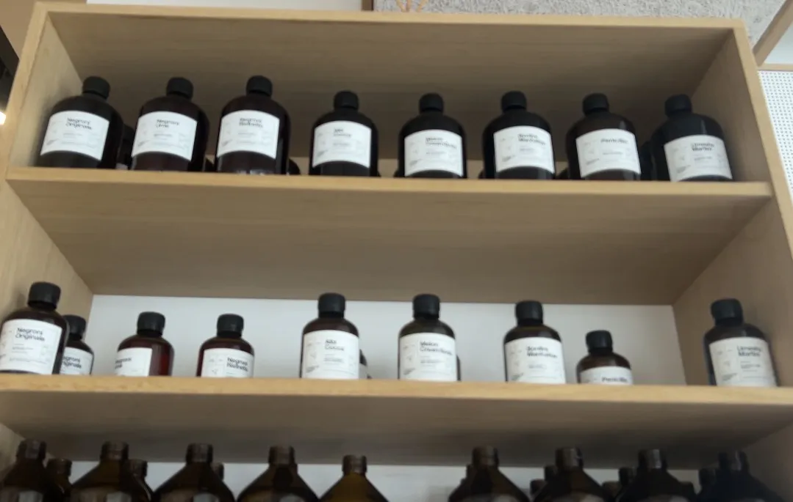
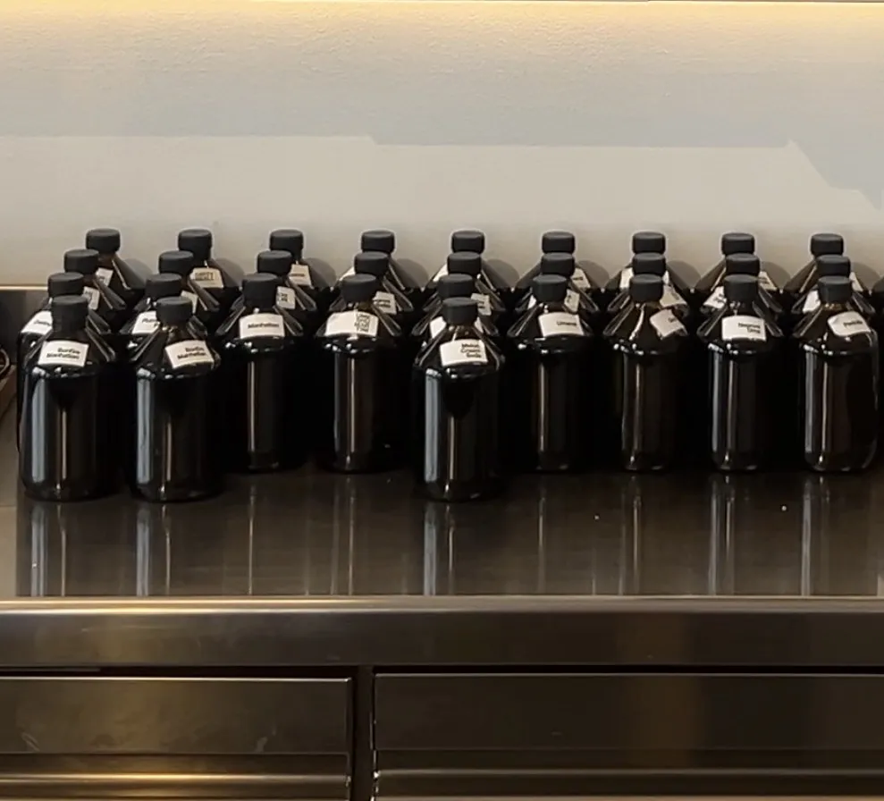

Bottled cocktails

We meet our client's requirements of enjoying perfectly balanced cocktails with minimal or zero preparation. Creating complex flavour combinations through perfect balance between alcohol level and flavour agents has solely been in the hands of professional bartenders. To balance perfect cocktails is a complex and refined craft that needs hours of commitment, insight and expert knowledge. In bottled cocktails, it is possible to create and mirror this universe of perfectly crafted cocktails. Alcohol level, complexity and comfortability is created to reproduce the intensity we request from the professional bar.
Our focus is to recreate the taste aspects we normally enquire. A sparkling fresh Mojito must taste of crispy light rum served in perfect balance with light mint and ice cold freshly squeezed lime juice balanced via a pinch of cane sugar and refreshing bubbles from carbonised mineral water. To most people this scenario is impossible — or at best difficult — when constructing liquid refinements in your kitchen and private minibar.
